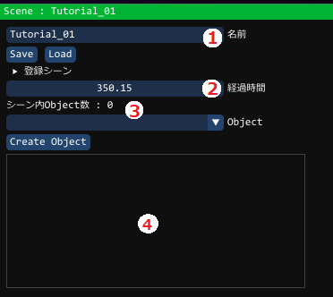
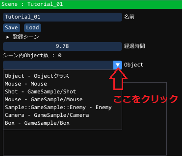
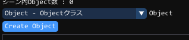
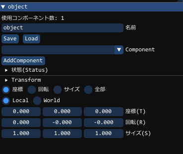
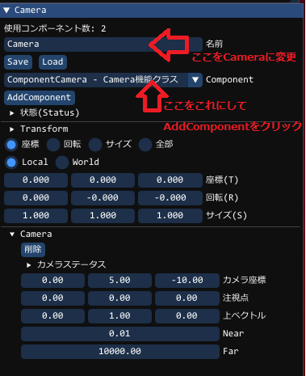
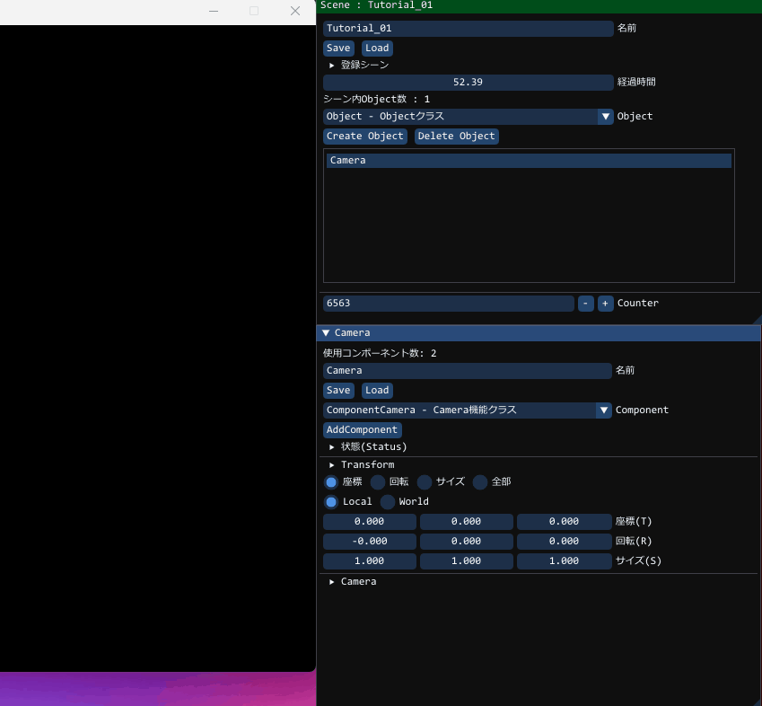
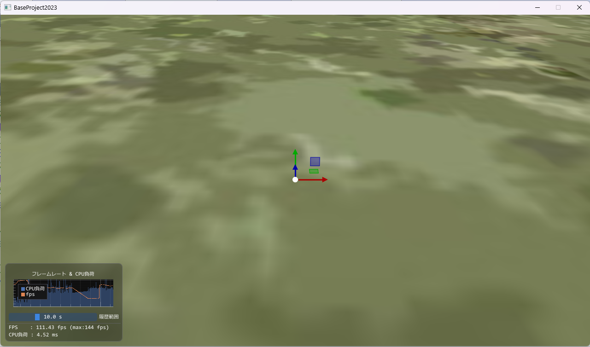

GUIについて
BPを実行するとわかりますが、GUIが用意されていますシーン名や経過時間や、存在するオブジェクトの情報がGUIに出てきます

今まで行ってきたプログラミングは、プログラムや調整の結果が違ったら、一度終了しプログラム内の数値を変えてビルド、実行を繰り返していたと思います
しかしこれではゲーム作成におけるイテレーションが非常に悪く、時間もかかります
BPでは作った後はGUIである程度調整してからその数値を覚えておいて、
再度プログラムすることや調整することができます
調整の際のイテレーションの良さは非常に大事です
良いゲームは、作成ではなく、調整に多くの時間を費やします
ゲームの良し悪しはこれで決まると言っても過言ではありません
ゲームを作成する場合は、まず簡単なオブジェクトを作成して、
テストすることが大事です
そして足りない必要なパーツ(Component)を作こと。これを繰り返して
レゴブロックのように組み立てることができるプログラムシステムを目指しましょう
今のBPはまだ不完全です。最後にはあなたの力が必要です
C++でありながら、高速なプログラムを可能とし、
何度も調整を繰り返せる自分の最高のゲーム作りの環境を手に入れましょう
まずはGUIでプログラミングをしてみよう
果たして、これをプログラミングと呼んでよいのか…ただ巷では「Scratch」というビジュアル的なプログラミングや
「Unity」「UnrealEngine」という、いわゆるゲームエンジンというものが存在します。
BPもエンジンの力を持っています。試してみましょう。
Objectの生成
のちの章に出てきますが、BPには、Objectという仕組みがあります。これは、「プレイヤー」になったり、「敵」になったり、
「アイテム」や「地面」になったりする もの「Object(オブジェクト)」です。
「Unity」でいうところの「GameObject」
「UnrealEngine」でいうところの「Actor」に相当します
BPでは、C++のプログラムからだけではなく、GUIからも作成することができます。


この時、特にゲーム画面に変化はありませんが「GUI」には変化があり、上の④には、「object」というものが現れ、 以下のような「GUI」も現れています

カメラの作成
とりあえず何も見えてないのでカメラを作ろうと思います。今作成したobject 名前、とあるところを、 Cameraという名前に変えておきましょう。
Cameraという名前ですが、ここではわかりやすいように名前を変更しているだけです。
まだカメラとは全く関係のないオブジェクトです
カメラにするには、次に、Objectを選択したときと、同じように、
Componentの横にある▼を押して、「ComponentCamera - Camera機能クラス」を選択してください。
最後に AddComponentをクリックします。

以上で作成したオブジェクト(Camera)にカメラの機能(ComponentCamera)を追加できました※オブジェクト(Camera)の項目の下に、▼Cameraというものが
下の欄に出てきていれば成功です
ただ、まだ真っ暗ですので、つぎはわかりやすい地面を配置したいと思います
地面の配置
以下のように地面のオブジェクトを作成し、モデル能力(ComponentModel)を追加して、
地面モデルを表示してみましょう

GUIが上記のようになるためには以下の動作を行います
以下のような画面になれば成功です
